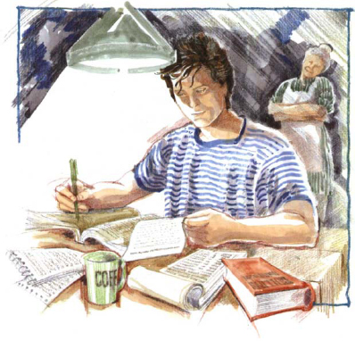
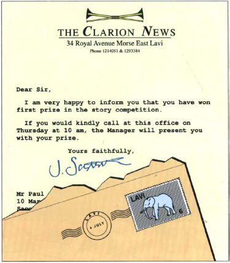
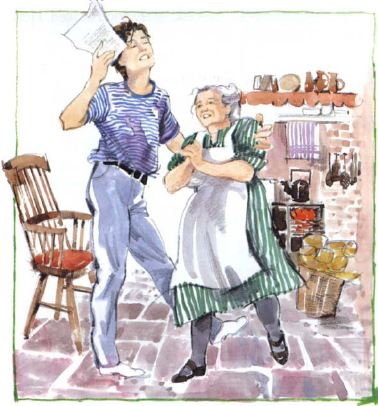

Listen to Part 1:
Trong nhiều ngày, Paul không gặp ai trong số những người bạn của mình. Mẹ cậu ấy lo lắng về cậu. Cậu ấy không nói chuyện với bà. Cậu ấy không ăn hay ngủ. Cậu ấy thường ra sông và ngồi đó một mình. Đầu óc cậu ấy lúc nào cũng nghĩ về Maria.
Một ngày, cậu ấy đọc được tít trên báo:
Cô Dâu Xinh Đẹp Của Người Đàn Ông Giàu Có
Có ảnh Maria và chồng cô ấy. Cô ấy mặc một chiếc váy dài màu trắng và một chiếc vòng cổ kim cương. Chồng cô ấy già và béo. Paul giận dữ lật tờ báo.
Có một thông báo lớn ở trang sau của tờ báo. Đó là mẩu quảng cáo. Paul ngồi xuống và đọc kỹ mẩu quảng cáo.
Đây là cơ hội dành cho mình! cậu ấy tự nhủ. Mình sẽ viết câu chuyện về Paul và Maria. Và mình sẽ giành chiến thắng cuộc thi. Cô ấy sẽ đọc câu chuyện của chúng mình và sẽ hối hận.
Paul lúc này rất bận. Ngày nào cậu ấy cũng thức dậy sớm và làm việc cho câu chuyện của mình. Mẹ cậu ấy nhìn cậu ấy. Bà thấy vui mừng. Cậu ấy đã lại ăn uống. Cậu ấy nói chuyện và cười.
Đôi khi, Paul cảm thấy vui mừng với câu chuyện của mình. Đó là một câu chuyện hay. Nhưng đôi khi viết cũng thật khó khăn. Cậu ấy buồn chán và muốn dừng lại. Nhưng cậu ấy không dừng lại. Cuối cùng, cậu ấy cũng hoàn thành câu chuyện.
Listen to Part 2:
Paul đọc nó cho mẹ nghe. Bà rất vui mừng.
‘Đó là một câu chuyện hay, Paul,’ bà ấy nói. ‘Thật tuyệt.’
Paul cẩn thận viết lại câu chuyện và gửi đến tờ báo.

Hai tuần sau, một bức thư từ tờ báo gửi đến. Paul không mở nó ra. Cậu ấy quá phấn khích. Cậu ấy đưa nó cho mẹ mình.
‘Mẹ đọc hộ con,’ cậu ấy nói.
Mẹ cậu ấy mở thư ra và đọc.
‘Tự đọc đi,’ bà ấy nói, và đưa nó cho cậu ấy. Bà ấy vừa cười vừa khóc.
Paul đọc bức thư.

Listen to Part 3:
Paul nhảy cẫng lên. Cậu ấy nhảy múa vòng quanh bếp và vung vẩy lá thư từ tờ báo.

‘Con thắng rồi!’ cậu ấy hét lên. ‘Mẹ ơi, con được giải rồi! Con sẽ trở thành nhà văn! Cuối cùng mình cũng có tiền! Con sẽ mua cho mẹ một chiếc váy mới và vài món đồ nội thất cho nhà mình.’ Cậu ấy dừng lại.
‘Maria có thấy truyện của con trên báo không mẹ?’ cậu ấy hỏi.
Mẹ cậu ấy nhìn cậu. Lúc này bà không còn cười nữa.
‘Con vẫn còn yêu cô gái đó chứ, Paul?’ bà ấy hỏi.
‘Vâng, mẹ,’ Paul nói. ‘Con sẽ luôn yêu cô ấy.’
Hôm thứ năm, Paul đến tòa soạn báo. Quản lý rất thân thiện.
‘Truyện của cậu hay lắm,’ ông ta nói. ‘Hay đến không tưởng. Đây là giải thưởng.’
Ông ta đưa Paul một phong bì. 500 bảng Anh! Paul không tin vào mắt mình. Cậu ấy cảm ơn quản lý và định ra về.
Listen to Part 4:
‘Đừng đi,’ quản lý nói. ‘Tôi muốn nói chuyện với cậu. Cậu đang làm nghề gì?’
‘Con chưa có việc làm, thưa ông,’ Paul nói. ‘Con muốn trở thành nhà văn.’
‘Tốt lắm,’ quản lý nói. ‘Chúng tôi cần những người trẻ như cậu. Đến làm việc cho báo của chúng tôi đi.’
Paul rất ngạc nhiên.
‘Ông muốn con ạ? Làm ở báo của ông ạ? Vâng! Vâng, tất nhiên con sẽ đi ạ,’ cậu ấy nói.